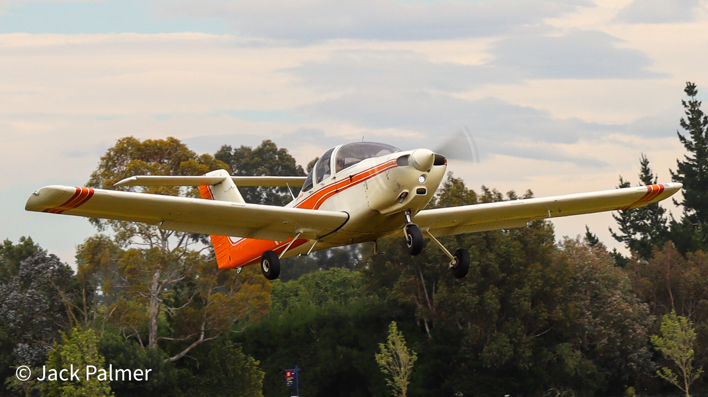

About Me
Hello there! My name is Jack, also known as nz__aviation. I'm a 14-year-old aviation enthusiast with big dreams of soaring through the skies at 900 knots. Currently, I'm a student pilot training at the Mid Canterbury Aero Club on a Piper PA-38, registered ZK-MAJ. The Mid Canterbury Aero Club is where my passion for aviation takes flight.
Ever since I was a little 5 year-old, I have had a dream of being a pilot. The thrill of aviation, the excitement of takeoff, and the beautiful views from the cockpit have boosted my eagerness to become a pilot. I'm pursuing my dream with determination and enthusiasm, learning every aspect of flying and navigating the large playground we call the sky.
One day, I aspire to be a pilot for Air New Zealand, cruising through the air on the magnificent Boeing 787 Dreamliner. The thought of piloting such an advanced and iconic aircraft excites me, and I'm committed to putting in the hard work to turn this dream into a reality.
Join me on this exciting journey as I share my experiences, challenges, and victories in the world of aviation. I hope to connect with other aviation enthusiasts through this website, share knowledge about the life of a young pilot in training, and inspire others to fly.
Thank you for being a part of my aviation adventure!
ZK-MAJ
Operated by Mid Canterbury Aero Club.
